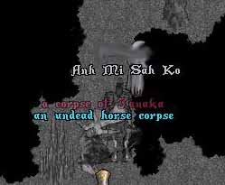

<< 鉱山PKの必要性 >>
・鉱山PKって存在は必要なのでしょうか？
答えはYesです。NPC風に言えばYes?です。
あなたがTで掘るよりもFで掘るほうが資材は２倍でお徳です。
デメリットがあるからこそ２倍なのです。
誰も鉱山PKをしなければ、誰もTで堀らなくなります。
それでは、つまらないですよね？
せっかくFで掘っているのに赤い名前の人が現れない。ドキドキしない。
そんな要望に答えられるのが鉱山PKなのです。
そして、鉱山PKに殺され、怒り、対人キャラを作成しPKK。
Fの活性化にもつながるのです。
実はここだけの話、私はOSIに頼まれて鉱山PKしてます。
時給１２００GPです。
ええ。ウソです。
ほんと、PKKしやすく出来上がってますよ。

（誰かHルニ製でもいいので装備ください）